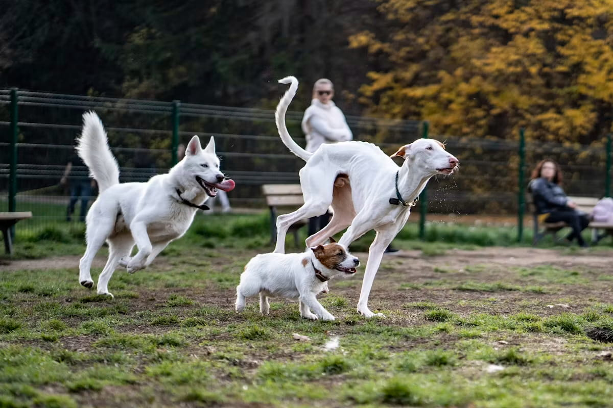

How to Stop a Dog From Jumping on Guests

Jumping is one of the most common complaints owners bring to trainers, and also one of the easiest to accidentally reward. A dog that jumps and gets attention — even a scolding, even hands pushing them off — has just learned that jumping works. The fix isn't punishment; it's making sure jumping never pays off while four-on-the-floor consistently does.
Why dogs jump in the first place
Jumping up is a greeting behavior rooted in how puppies interact with their mother's face, and it's reinforced early by how humans respond. A puppy jumps, a person laughs, bends down, or gives attention — the dog has just been rewarded for jumping, whether or not that was the intent. By adulthood, it's a well-practiced habit for getting attention fast.
The core rule: attention only comes with four paws down
Every person the dog interacts with needs to follow the same rule, consistently, or the training won't stick. The moment a dog's front paws leave the ground, all attention stops — no eye contact, no talking, turn away or step back. The instant all four paws are on the floor, attention resumes calmly. Dogs repeat what works, so the behavior that reliably gets ignored fades, and the one that reliably gets attention increases.
- Turn away, don't push away. Pushing a dog off with your hands or knee is still physical contact, which many dogs read as play or attention — it can actually reinforce jumping rather than stop it.
- Stay boring during the jump. No words, no eye contact, arms crossed, body turned away. The goal is to become completely uninteresting for the two or three seconds the jump lasts.
- Reward the instant it stops. Timing matters — praise or a treat the second all four paws touch down, not a few seconds later.
Practicing with a plant — controlled setups beat real chaos
Real guests are unpredictable and hard to coach in the moment, so most of the actual training happens with a cooperating friend or family member acting as a "plant" — someone who knows the plan and will follow it precisely, arriving and leaving through the same door repeatedly.
Start with the dog on a leash a few feet from the door. Have the plant knock or ring the bell, then enter and immediately turn away if the dog jumps, ignoring it completely. As soon as the dog offers a sit or stands with four paws down, the plant turns back, crouches slightly, and gives calm praise. Repeat the entry eight to ten times in a session — dogs generalize fastest with repetition in a low-stakes setup, not with one high-stakes real arrival.
Give the dog a job instead of just a rule
A rule that only says "don't jump" leaves a gap the dog has to fill on their own, and jumping often wins by default because it's already the well-rehearsed option. Teaching an incompatible behavior — a dog physically can't jump and hold a sit at the same time — closes that gap.
Train a rock-solid "sit for greeting" separately from the door context first, in a calm room with no distractions, until it's fast and reliable. Only then move it to the door. Some owners find a specific spot — a mat a few feet back from the entry — works even better than a bare command, since it gives the dog a physical target to go to.
When guests won't cooperate with the plan
Not every visitor will remember to turn away, and one inconsistent guest can slow progress. Two practical workarounds: keep the dog on a leash during arrivals for a few weeks so you can physically prevent the jump from connecting with the guest by stepping on the leash's slack (never a hard yank), or manage the first few minutes with the dog behind a baby gate or in another room until the initial excitement settles, then bring them out for a calmer, second greeting.
A note on excitement versus dominance
Older training advice sometimes framed jumping as a dog asserting status. Contemporary behavior science doesn't support that reading for the vast majority of cases — jumping is almost always simple excitement and a learned attention-getting habit, not a bid for control. That distinction matters because it rules out corrective, dominance-based methods (like knee strikes or alpha rolls) that carry real risk of increasing fear or defensive behavior without addressing the actual cause.